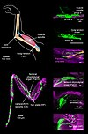

proprioception

Definition: Proprioception ( PROH-pree-o-SEP-shən), also referred to as kinaesthesia (or kinesthesia), is the sense of self-movement, force, and body position. It is sometimes described as the "sixth sense".Proprioception is mediated by proprioceptors, mechanosensory neurons located within muscles, tendons, and joints. Most animals possess multiple subtypes of proprioceptors, which detect distinct kinematic parameters, such as joint position, movement, and load. Although all mobile animals possess proprioceptors, the structure of the sensory organs can vary across species.
Source: Wikipedia
Wikipedia Page
Wikidata Page